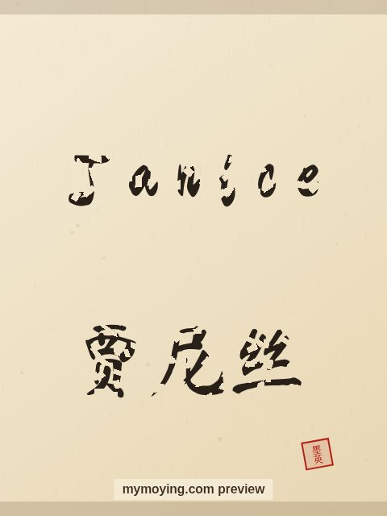

Janice in Chinese Calligraphy
See how the name Janice looks written with a traditional Chinese brush, next to its Chinese transliteration 贾尼丝 (Jiǎ ní sī).

Sample. “Janice” in the Regular (楷书) brush style with the Chinese name 贾尼丝 (Jiǎ ní sī). The paid file removes the watermark.
The Chinese characters for Janice
As a transliteration, Janice is usually written 贾尼丝 (Jiǎ ní sī). Each character is listed below with its own dictionary meaning — the name is chosen by sound, not by meaning, and Moying does not translate names. Please have a person review the characters before any permanent use such as a tattoo.
Origin and meaning
Janice is a Hebrew name meaning “God is gracious (form of Jane)”.
About the name Janice
A form of Jane that was a favourite of the 1940s and 1950s.
As a gift or a tattoo
Because it means “God is gracious (form of Jane)”, a Janice calligraphy print makes a thoughtful gift for someone who loves the name or its meaning.
Open Janice in the generatorFree watermarked preview. $1.99 once for a clean high-resolution download of this name in every style and setting. No subscription. Digital product, delivered instantly; see Terms.